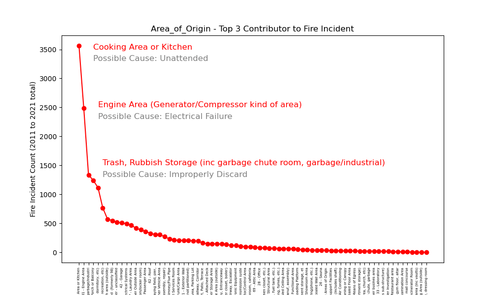

Hikmet
Tyler
Abish

Ana
Hikmet | Tyler | Abish | Ana |
| The slope is positive 0.15, that means: max temperature is increasing 0.15 degree Celcius per year. rValue is too small < 0.5 |
| We were seeking for a correlation between "max temperatures" and "fire count" but there is a very week corelation as you can see there is a sudden increase (almost double) after 2018 |
|  | ConclusionsWe should be more careful in those areasand improve some other instruments to reduce fire risk. After Covid more people forced to stay home and people seems like to spend more time in the kitchen. Also produced more trash. Those fires also end up with causalties, while we are saving lives from covid, we are creating causalties due to sending people home. |